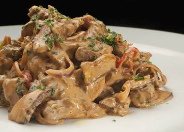

Estrogonofe de Carne (de jaca)
Receitinha fácil e rápida para aquele almoço em cima da hora

INGREDIENTES
- 1kg de carne de jaca
- 1 cubo de caldo de legumes
- 1 vidro de champignon ou palmito
- 3 cebolas médias
MODE DE PREPARO
- Corte a jaca em tiras e doure-a no óleo
- Acrescente a cebola cortada, deixe cozinhar por mais algum tempo aproximadamente uns 20 minutos sempre acompanhando
- Acrescente e o cachup e o champignom e deixe cozinhar por mais uns 3 a 5 minutos